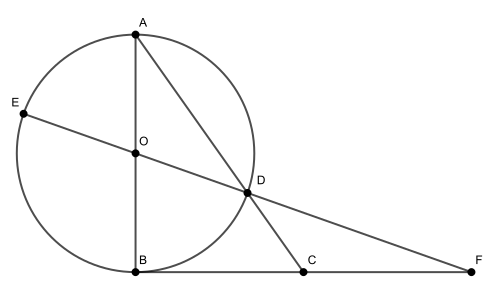

К окружности с диаметром AB = 6 проведена касательная BC так, что . Прямая AC вторично пересекает окружность в точке D. Точка E диаметрально противоположна точке D. Прямые ED и BC пересекаются в точке F.
а) Докажите, что прямые AD и MC параллельны.
б) Найдите площадь треугольника DBC, если AK = 4 и MK = 12.

а) Заметим, что поскольку этот угол опирается на диаметр AB. Тогда BD — высота прямоугольного треугольника ABC. По свойству высоты получаем, что тогда Треугольники EOB и DOA равны по двум сторонам и углу между ними, значит, EB = AD, откуда .
б) Выразим площадь треугольника FBE:
Вычислим длины отрезков:
Применим теорему Менелая для треугольника ABC и прямой ODF:
,
откуда BF=2CF. Таким образом, C — середина BF и . Следовательно,
Ответ: б)